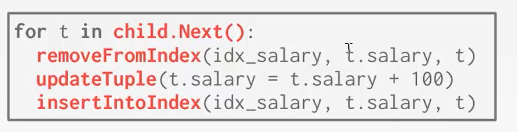
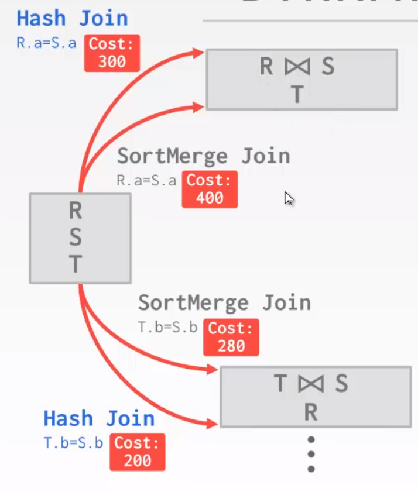

Query Optimization
Query Execution I
DBMS将SQL语句转换为查询计划。查询计划中的操作符被安排在一个树中。查询计划，也叫做查询树，有一些列操作符组成，它们按照一定的运算关系构成查询的一个执行方案。从形式上看是一颗二叉树，树叶是每个单表对象，两个树叶的父节点是一个连接操作符。据从这棵树的叶结点流向根结点。树中根节点的输出是查询的结果。通常操作符是二进制的(1-2个孩子)。同一个查询计划可以以多种方式执行。
1. Processing Model
执行模型是用来定义系统执行计划是怎么计算的，它指定查询计划的计算方向以及操作符之间传递的数据类型。处理模型有不同的模型，不同的workload在设计上会有一些trade-off。
这些模型还可以实现为从顶到底或从底到顶调用操作符。虽然从上到下的方法更为常见，但从下到上的方法可以更严格地控制管道中的缓存/寄存器（ caches/register），这里介绍三种模型：
Approach#1: Iterator Model
迭代器模型，也称为Volcano或Pipeline模型，是最常见的处理模型，几乎每个(基于行的)DBMS都使用它。
迭代器模型通过为数据库中的每个操作符实现Next函数来工作。查询计划中的每个节点调用子节点上的Next，直到到达叶节点，叶子节点开始向其父节点发出tuple以进行处理。在检索下一个元组之前，对每个tuple进行尽可能多的计划处理。这在基于磁盘的系统中非常有用，它允许在访问下一个元组或页面之前充分使用内存中的每个tuple。
执行计划中每个算子都要实现一个Next()方法。每一次父算子会调用Next方法，子算子都会返回一行数据给父算子，没有数据时会返回null；如果当前算子是父算子，它将在循环中不断地调用子算子的Next方法，获取数据进行处理。
迭代器模型如下图所示：
循环调用子算子的next方法，每拿到子算子的tuple，就向外projection（输出）
循环调用左孩子的next方法，使用外表去构建一个哈希表，此时projection是阻塞的，需要等待该步骤的emit方法执行才能获取数据；
再循环调用右孩子的next方法，从S表中不断获取数据，与谓词条件进行判断，如果匹配，就将该数据与哈希表中的数据进行匹配。
在对Next的每次调用中，操作符要么返回单个tuple，要么返回空标记(如果没有更多tuple可发出)。该操作符实现了一个循环，该循环在其子对象上调用Next来检索它们的tuple，然后对它们进行处理。这样，在父对象上调用Next，在其子对象上调用Next。作为响应，子节点将返回父节点必须处理的下一个tuple。迭代器模型允许流水线操作，DBMS可以在检索下一个tuple之前通过尽可能多的操作符处理一个tuple。查询计划中为给定tuple执行的一系列任务称为管道。
几乎所有的数据库都实现了火山模型及其变种。有一些算子会有阻塞的阶段，需要子算子返回全部的数据。比如：joins，sub queries，order by操作，在这些阶段不能向上吐出数据。order by不能流式计算，子算子需要获取所有数据后一起进行排序，再将排好的结果返回给上一级。使用火山模型，输出控制是比较容易实现的，如limit 100，不需要底层读表的算子需要读取多少行，直接从最顶层控制出口即可，因为算子一旦拥有了所需的所有tuple，就可以在它的子(或子)算子停止调用Next。不难看出，火山模型中使用大量的函数调用和返回值传输数据，大量的函数调用会导致性能问题。
Approach#2: Materialization Model
物化模型，一次性输出输出全部的数据。如：判断一个属性是否大于100，把所有的数据一次性拿出，然后返回判断后的结果。
每一个算子都是一个方法，返回一个数组。数据的操作单位是一个包含全部数据的数组，最后整个输出。每个算子只调用一次，做完全部的判断。
有一些OLTP数据比较适合这个模型，它们一般都是点查询，只涉及到几行数据，所以数据集也比较小；而OLAP类型查询中庞大的结果集就不怎么适用了。
Approach#3: Vectorization Model
火山模型和物化模型都有一些问题，向量化模型有点向它们的结合。它也像火山模型一样有Next方法，但是它每次返回的不是一个single tuple，而是一批 batch tuple。
与迭代器模型一样，向量化模型中的每个操作符都实现了Next函数。然而，每个操作符发出的是一批数据(即向量)，而不是单个tuple。向量化模型与迭代器模型非常相似，除了在每个操作符处，输出缓冲区与期望的发送大小相比较。如果缓冲区更大，则发送一个tuple批处理。
n是设置的数据，一批一个数据，需要调用1万次，如果一批返回10条数据，那么只用函数调用1000次，函数调用次数大大减少。
这种方法对于OLAP类型数据库比较友好，能够减少函数调用的次数，中间的结果集也会比较大。允许算子更容易地使用向量指令集去批处理数据。
2. Processing Direction
根据函数调用的方向，有两种执行方法：
Approach#1: Top-to-Bottom
从根节点开始，往下拉取数据，tuple总是通过函数调用传递。
Approach#2: Bottom-to-Top
从叶子节点开始，向上调用父节点，允许对操作符管道中的缓存/寄存器进行更严格的控制。
3. Access Methods
访问方法是DBMS访问存储在表中的数据的方式，即用什么方式存取表中的数据。通常有两种访问模型的方法：数据要么从表中读取，要么通过顺序扫描从索引中读取。
Approach#1: Sequential Scan
顺序扫描，全表扫描，一页一页扫描页中的所有数据。顺序扫描操作符遍历表中的每个页，并从缓冲池中检索它。当扫描遍历每个页面上的所有tuple时，它计算谓词，以决定是否将tuple发送给下一个操作符。
对于table中改的每个页，先去缓存中找，如果没有就去硬盘中找。遍历每一个行记录并去处理它。
DBMS需要维护一个内部游标/指针，以便追溯上次执行到的page或slot的位置。
优化: 如果在执行计划中存在全表遍历的情况，那么这肯定是一个可以化的地方，下面几种方法可以优化全表扫描速度。
Prefetching：提前抓取几个页面，这样DBMS在访问每个页面时就不必在存储I/O上阻塞
Buffer Pool Bypass：扫描操作符将从磁盘获取的页面存储在本地内存中，而不是存储在缓冲池中，以避免顺序泛洪
Parallelization：使用多个线程/进程并行执行扫描
Zone Map：zone map给每个页做了统计信息
问题：关于页的信息存在哪里？数据变化的开销没有统计信息大怎么办？
Late Materialization：最后一步将数据进行物化，避免大量扫描，比较适合列存储
Heap Clustering：tuple使用集群索引指定的顺序存储在堆页中
Approach#2: Index Scan
当查询需要时，DBMS通过索引去查找数据，在选择过程中涉及到很多因素，包括:：
索引中是否包含输出列
索引的值的范围
谓词的组成
索引是唯一索引还是非唯一索引
对于下面这条SQL，有两个索引index1：age，index2：dept
1 | |
SQL中含有三个谓词，两个索引。如果走索引去遍历student表，应该使用哪个索引呢？
什么时候走index1合适？走完索引之后剩下的数据越少。如果所有的学生都30多岁，就4个20多岁。
什么时候走index2合适？全学校所有的人都小于30岁，只有一小部分人是CS专业的。
考虑一个具有100个tuple两个索引(age和department)的表。在第一个场景中，最好在扫描中使用department索引，因为它只有两个tuple要匹配。选择age索引并不比简单的顺序扫描好多少。在第二种情况下，age索引将消除更多不必要的扫描，是最佳选择。
Approach#3: Multi-Index/ Bitmap Scan
更高级的DBMS支持多索引扫描，DBMS可以使用位图、哈希表或Bloom过滤器通过集合交集来计算记录id。
如果有多个索引，DBMS可以用于查询：
- 使用每个匹配的索引计算记录id集
- 根据查询的谓词组合这些集合(union vs. intersect)
- 检索记录并应用所有剩余谓词。
多索引筛选，还是以上文的SQL为例：先用age索引把小于30岁的人筛选出来，再使用关于dept的索引把CS专业的人筛选出来，最后取他们的交集，最后检查数据中country是US的student。使用韦恩图表示为：
4. Modification Qureies
对数据库有更改的查询（insert，update，delete）与上面所研究的对表的查询，二者的执行逻辑是完全不同的。修改数据时需要检查约束（要求unique等）；如果这列有索引，也要根据新增数据修改索引。
update/delete：子算子向目标数据传递recordID，然后去删除。类似于晚物化的思想。算子必须记住本次执行时修改过哪条数据，
insert：在算子内部物化数据，把整个行记录插入；或需要子算子把行记录物化好，将整个数据传递过来，插入即可。
Halloween problems
一种异常现象，更新操作改变了元组的物理位置，导致扫描操作符多次访问元组。这可能发生在集群表或索引扫描上
update query problem

上面这个例子会出现重复执行的问题。
为什么叫Halloween problem？这种现象最初是由IBM的研究人员在1976年万圣节那天构建System R时发现的。
5. Expression evaluation
DBMS将WHERE子句表示为一个表达式树(参见图6中的示例)。树中的节点表示不同的表达式类型。
一些可以存储在树节点中的表达式类型的例子：
- Comparisons (=, <, >, !=)
- Conjunction (AND), Disjunction (OR)
- Arithmetic Operators (+, -, *, /, %)
- Constant and Parameter Values
- Tuple Attribute References
例：
该SQL可能是一个存储过程，也有可能是一个预编译好了的SQL。
效率问题：
为了在运行时计算表达式树，DBMS维护一个上下文句柄，该句柄包含执行的元数据，如当前元组、参数和表模式。然后DBMS遍历树来计算它的操作符并产生一个结果。以这种方式计算谓词很慢，因为DBMS必须遍历整个树，并确定每个操作符要采取的正确操作。更好的方法是直接对表达式求值。
Query Execution II
之前关于查询执行的讨论假设查询是用一个worker(即线程)执行的。在现实中，查询通常是与多个worker并行执行的。并行执行为DBMS提供了许多好处：
- 吞吐量(每秒查询次数增加)和延迟(每次查询时间减少)方面的性能提高
- 从DBMS的外部客户的角度提高响应性和可用性
- 潜在地降低总拥有成本(TCO)。这一成本包括硬件采购和软件许可，以及部署DBMS的人工开销和运行机器所需的能源
DBMS支持两种类型的并行：查询间并行和查询内并行
1. 并行数据库 vs 分布式数据库
在并行和分布式系统中，数据库分布在多个“资源”上，以提高并行性。这些资源可以是计算资源(例如，CPU内核、CPU插槽、gpu、额外的机器)，也可以是存储资源(例如，磁盘、内存)。区分并行系统和分布式系统是很重要的：
- 并行DBMS：在并行DBMS中，资源或节点在物理上是彼此接近的。这些节点采用高速互连方式进行通信。它假设资源之间的通信不仅快速，而且廉价和可靠。
- 分布式DBMS：在分布式DBMS中，资源可能彼此相隔很远；这可能意味着数据库跨越世界不同地区的机架或数据中心。因此，资源在公共网络上使用较慢的互连进行通信。节点之间的通信成本更高，故障不能忽略。
即使一个数据库可能在物理上被划分为多个资源，它对应用程序来说仍然是一个单一的逻辑数据库实例。因此，对单节点DBMS执行的SQL查询应该在并行或分布式DBMS上生成相同的结果。
2. Process Models
DBMS过程模型定义了系统如何支持来自多用户应用程序/环境的并发请求。DBMS由更多的工人组成，这些工人代表客户执行任务并返回结果。一个应用程序可以在同一时间发送一个或多个请求，这些请求必须被划分到不同的worker。一个DBMS可以采用三种不同的进程模型：
Process per Worker
第一个也是最基本的方法是每个工人的流程。这里，每个worker都是一个单独的OS进程，因此依赖于OS调度器。应用程序发送请求并打开到数据库系统的连接。一些调度程序接收到请求，并分离出一个worker来处理这个连接。应用程序现在直接与负责执行查询所需请求的worker通信。
每个工作进程的一个优点是，进程崩溃不会破坏整个系统，因为每个工作进程都在自己的操作系统进程的上下文中运行。这个过程模型提出了一个问题，即在不同的过程中，多个工作人员对同一页面进行大量复制。一个最大化内存使用的解决方案是为全局数据结构使用共享内存，这样它们可以被运行在不同进程中的工作者共享。
使用每工作进程模型的系统包括IBM DB2、Postgres和Oracle。
Process Pool
进程池模型是每个工作进程模型的扩展。不是为每个连接请求分叉进程，而是将worker保存在一个池中，并在查询到达时由调度程序选择。因为进程共同存在于一个池中，所以进程之间可以共享查询。
像每个工作进程一样，进程池也依赖于操作系统调度程序和共享内存。这种方法的缺点是较差的CPU缓存局域性，因为不能保证在查询之间使用相同的进程。
使用进程池进程模型的系统包括IBM DB2和Postgres （2015-post）。
Thread per Worker
第三种也是最常见的模式是每个工作人员的线程。每个数据库系统只有一个具有多个工作线程的进程，而不是让不同的进程执行不同的任务。DBMS对任务和线程有完全的控制，它可以管理自己的调度。多线程模型可能使用调度程序线程，也可能不使用。
使用多线程体系结构提供了一定的优势。首先，每次上下文切换的开销更少。此外，共享模型不需要维护。然而，每个工作线程模型并不一定意味着DBMS支持内部查询并行性。
Scheduling
总之，对于每个查询计划，DBMS必须决定在哪里、何时和如何执行。相关问题包括：
- 它应该使用多少任务?
- 应该使用多少CPU内核?
- 任务应该在哪个CPU内核上执行?
- 一个任务应该在哪里存储它的输出?
当做出关于查询计划的决定时，DBMS总是比操作系统知道的更多，因此应该按其优先级排序。
3. Inter-Query Parallelism
在查询间并行中，DBMS并行地执行不同的查询。因为多个worker同时运行请求，整体性能得到了提高。这增加了吞吐量并减少了延迟。
如果查询是只读的，那么查询之间几乎不需要协调。但是，如果多个查询同时更新数据库，则会出现更复杂的冲突。
4. Intra-Query parallelism
在查询内并行性中，DBMS并行地执行单个查询的操作。这减少了长时间运行的查询的延迟。内部查询并行性的组织可以按照生产者/消费者范式来考虑。每个操作符都是数据的生产者，同时也是数据的消费者，这些数据来自运行在其下方的某些操作符。
并行算法存在于每一个关系运算符。DBMS可以使用多个线程访问集中的数据结构，也可以使用分区来划分工作。在内部查询并行性中，有三种类型的并行性:内部操作符、内部操作符和丛式。这些方法并不相互排斥。在给定的工作负载下，以一种优化性能的方式组合这些技术是DBMS的责任。
Intra-Operator Parallelism (Horizontal)
在操作符内并行性中，查询计划的操作符被分解成独立的片段，这些片段对不同(不相交的)数据子集执行相同的功能。
DBMS将一个交换操作符插入到查询计划中，以合并子操作符的结果。交换操作符防止DBMS在计划中执行它上面的操作符，直到它从子节点接收到所有的数据。
此SELECT的查询计划是对a进行顺序扫描，并将其输入过滤器操作符。为了并行运行，查询计划被划分为不相交的片段。一个给定的计划片段被一个不同的worker操作。exchange操作符对所有片段并发地调用Next，然后这些片段从各自的页面中检索数据。
一般来说，exchange操作符有三种类型：
- Gather：将来自多个工作者的结果合并到单个输出流中。这是并行DBMS中最常用的类型
- Repartition：跨多个输出流重新组织多个输入流。这允许DBMS接受以一种方式划分的输入，然后以另一种方式重新分配它们
- Distribute：将单个输入流分割为多个输出流
Inter-Operator Parallelism (Vertical)
在操作符间并行中，DBMS为了将数据从一个阶段输送到下一个阶段而重叠操作符。这有时被称为流水线并行。参见下图中示例。这种方法在流处理系统中被广泛使用，流处理系统是在输入元组流上连续执行查询的系统。
在左边的JOIN语句中，一个worker执行JOIN，然后将结果发送给另一个worker，后者执行投影，然后再次发送结果。
Bushy Parallelism
Bushy并行是操作符内并行和操作符间并行的一种混合，workers在同一时间执行来自查询计划的不同段的多个操作符。DBMS仍然使用交换操作符来组合这些段的中间结果。
为了在三个表上执行4-way JOIN，查询计划被分成4个片段，如下所示。查询计划的不同部分同时运行，其方式类似于操作符间并行。
5. I/O Parallelism
如果磁盘始终是主要的瓶颈，那么使用额外的进程/线程并行执行查询不会提高性能。因此，能够跨多个存储设备分割数据库非常重要。为了解决这个问题，DBMS使用I/O并行性来跨多个设备分割安装。I/O并行化的两种方法是多磁盘并行化和数据库分区。
Multi-Disk Parallelism
在多磁盘并行中，操作系统/硬件被配置为跨多个存储设备存储DBMS的文件。这可以通过存储设备或RAID配置来实现。所有的存储设置对DBMS来说都是透明的，因此worker不能在不同的设备上操作，因为DBMS不知道底层的并行性。
Database Partitioning
在数据库分区中，数据库被划分为不相交的子集，这些子集可以分配给离散的磁盘。一些DBMS允许指定每个数据库的磁盘位置。如果DBMS将每个数据库存储在单独的目录中，那么在文件系统级别上就很容易做到这一点。更改的日志文件通常是共享的。
逻辑分区的思想是将单个逻辑表分割成分离的物理段，这些物理段分别存储/管理。理想情况下，这种分区对应用程序是透明的。也就是说，应用程序应该能够访问逻辑表，而不必关心数据是如何存储的。分区的两种方法是垂直分区和水平分区。
在垂直分区中，表的属性存储在单独的位置(如列存储)。为了重建原始记录，必须存储元组信息。
在水平分区中，根据某些分区键将表的元组划分为不相交的段。有不同的方法来决定如何分区(例如，散列、范围或谓词分区)。每种方法的有效性取决于查询。
Query Planning & Optimization I
SQL是声明式的，查询只告诉DBMS要计算什么，而没有告诉DBMS如何计算。因此，DBMS需要将SQL语句转换成可执行的查询计划。但是在查询计划中执行每个操作符有不同的方法(例如，连接算法)，这些计划之间的性能也会有所不同。DBMS优化器的工作是为任何给定的查询选择一个最佳的计划。
SQL语句的执行效率对数据库的效率影响较大，为了提高查询语句的执行效率，对其进行优化是必不可少的。对查询语句进行优化的技术就是查询优化技术，以确定给定查询的高效执行计划的过程。执行计划是由一系列内部的操作符组成的查询树，其中的操作符按一定的运算关系构成查询的一个执行方案。查询优化就是在数据库优化器引擎生成一个执行策略的过程，尽量使查询的开销（IO,CPU,网络传输等）最小，即生成最好的查询计划。
优化器的两个流派：启发式和代价式。
1.Heuristics/rules
基于规则优化，启发式，也叫RBO。重写SQL来提升执行查询效率，需要去查询catalog（元数据），需要查看数据库表与行列的信息，但是这种该方法不需要知道数据的具体情况。如某列存在索引，只需要使用即可，不需要知道该列的直方图等具体信息。
2.Cost-based Search
基于代价优化，需要构建代价模型来计算代价的值。需要估计多个等价plan的代价，选择一个最小的代价。需要知道数据的情况，要知道算子需要处理多少数据。
大部分数据库这两种方法都会采用，如MySQL和PG就同时采用了这两种策略。
SQL执行流程
Application：用户的业务发送一些query（SQL)，少数数据库会存在一个SQL rewriter，将文本上的数据进行一些预处理，如：字符串级别做一些简单的优化
Parser：会把SQL变为一个抽象语法树
Binder：连接器，抽象语法树会涉及到库的名称表的名称，元数据的名称；这些名称需要与系统元数据里面的物理id相对应。将用户的表名转成数据库内部的id。
如果用户请求了一个不存在的表，会报错
Tree rewriter：大多数数据库拥有，把抽象语法树变为一个标准的执行计划。如：用户写了join，一开始可能join是乱的，rewriter会将所有join变为一个左深树，两两join。将抽象语法树转成一个优化器可以工作的最原始的逻辑计划，过程中也会从查询一些系统元数据
Optimizer：随后有一个最原始的逻辑计划输入到optimizer优化器中
RBO：如果是启发式的查询，会查询系统元数据进行一些优化
CVO：不光会查询系统元数据，还会查询已经定好的数据库代价模型
Physical Plan：最终生成一个物理计划，每个算子都是实际执行的一个物理算子
逻辑计划和物理计划
逻辑计划：关系代数类型的
物理计划：如何执行join，具体执行方法（走索引还是走扫描）
优化器生成逻辑代数表达式到最佳等效物理代数表达式的映射。逻辑计划大致相当于查询中的关系代数表达式。物理操作符使用查询计划中不同操作符的访问路径定义特定的执行策略。物理计划可能取决于所处理数据的物理格式(即排序、压缩)。并不总是存在从逻辑计划到物理计划的一对一映射.
查询优化分为物理优化和逻辑优化，物理优化主要根据数据读取、表连接方式、表链接顺序、排序等技术随查询进行优化；逻辑计划是指依据关系代数的等价变换做一些逻辑变换。逻辑计划与物理计划中的算子有相对应的关系，比如join算子可能对应嵌套循环等。
1. 关系代数的等价
查询优化在很大程度上依赖于一个基本概念，即在等价表达式中保持关系代数的高级属性。如果两个关系表达式等价，那么它们的输出结果集是一样的。数据可以直接在逻辑上判断是不是等价的，有时也叫query rewriting。
以下是关系代数等价的几个操作：
谓词下推
关系代数等价的一个例子是谓词下推，其中谓词被应用于序列的不同位置，以避免不必要的工作。
两个表做join，再将筛选后的结果做输出。可以将谓词下推，在读表的时候在join之前进行筛选，选出分数为A的同学，减少了连表开销，且输出结果是相同的。这两个关系表达式\(\pi_{name}, cid(\sigma_{grade}='A'(student\Join enrolled)) = \pi_{name},cid(student\Join (\sigma_{grade}='A'(enrolled)))\) 是等价的，这是优化的基本原理。
Selection选择
尽早地执行过滤，把复杂谓词分解并下推。如：\(\sigma_{p1\bigwedge p2\bigwedge ...pn}(R) = \sigma_{P1(\sigma_(P2)(...\sigma_{pn}(R)))}\)
简化复杂谓词，例\((X=Y {AND}\ Y=3) -> X=3\ AND\ Y=3\)
Join连表
对于inner join来说，既符合交换律\(R\Join S = S\Join R\)，又符合结合律\((R\Join S) \Join T = R \Join(S\Join T)\)。
如果多个表进行join，有很多种排列组合。大概有\(4^{10}\)种可能的执行情况，这也是join成为执行优化比较复杂的原因。
Projection投影
提前物化：执行过程中根据输出列筛选中间结果
晚物化：可能输出的时候再进行回表查找数据
物化对于列存数据库来说不是特别重要，列存永远都是晚物化的。
2. 逻辑计划优化
我们需要先制定一些规则，有筛选算子select可以向下推，让程序进行匹配，根据规则对逻辑计划进行变换。目标是尽量输出一个高效的逻辑计划，但是不能比较逻辑计划的好坏，内部会根据规则把旧的逻辑计划转换成新的计划。
一些选择优化包括:
尽可能早地执行过滤器(谓词下推)
重新排序谓词，以便DBMS首先应用最具选择性的谓词
拆分一个复杂谓词并将其向下推(拆分连接谓词)
一些投影优化包括:
- 尽可能早地执行投影，以创建更小的元组并减少中间结果(投影下推)
- 项目出所有的属性，除了那些请求或需要的
计划优化手段
三个表join，如果直接根据SQL生成不加优化的逻辑计划为下图，首先将两个表做笛卡尔积，再将结果与第三个表做笛卡尔积，最后进行筛选。
当然也可以做一些优化：首先分解为三个谓词（谓词分解）；再将其中两个谓词下推（谓词下推）；将笛卡尔积匹配上谓词变为带有等价连接的join；最后使用投影下推，筛选掉无用的数据。
嵌套子查询
DBMS还可以在不引用成本模型的情况下优化嵌套的子查询。这类优化有两种不同的方法:
- 通过解除关联和/或扁平化来重写查询
- 分解嵌套查询并将结果存储到临时表中
重写
解耦
下图中谓词带有子查询，该查询是一个常数，是一个Nested Block，需要不断循环执行该查询。可以先执行这个查询，放在嵌套子查询外执行。
遇到复杂且不便重写询的SQL，可以考虑将子查询作为临时表进行解耦操作。
表达式重写
DBMS可以使用的另一个优化是删除不可能或不必要的谓词。在这种优化中，DBMS省略了对结果不会改变表中每个元组的谓词的求值。绕过这些谓词可以降低计算成本。
把表达式进行重写，让谓词本身更高效：使用一些iif-else语句或模式匹配规则进行优化。
查找符合规则的表达式，如果符合进行重写，直到没有新的规则可供优化。例：
不可能或不需要的谓词：
join的消除：查询1中的连接是浪费的，因为A中的每个元组都必须存在于A中。JOIN操作的顺序是查询性能的关键决定因素。对所有可能的联接顺序进行穷举枚举是低效的，因此联接顺序优化需要一个成本模型。然而，我们仍然可以通过启发式的优化方法来消除不必要的连接。
子查询中的join处理：
谓词合并：一个类似的优化是合并谓词，查询1中的WHERE谓词有冗余，因为它搜索的是1到150之间的任何值。查询2显示了在查询1中表达请求的更简洁的方法。
Query Planning & Optimization II
1. 代价估算
DBMS使用cost model来估计执行计划的成本。这些模型评估查询的等效计划，以帮助DBMS选择最优的一个。代价模型由三部分组成：
Choice #1: Physical Cost
物理代价，硬件占比更大。预测CPU周期，IO，cache misses与RAM等。
Choice #2: Logical Cost
逻辑代价，估算每个操作符的大小；算子的算法是独立的；需要顾及操作符结果的大小
Choice #3: Algorithmic Costs
算法代价，即算子实现的复杂算法。
Statistics
对查询的所有有效计划的穷举枚举，对于优化器来说太慢了。对于交换和结合的连接，每个n向连接有4n种不同的顺序。优化器必须限制他们的搜索空间，以有效地工作。为了估计查询的成本，DBMS维护关于表、属性和内部目录中的索引的内部统计信息。不同的系统以不同的方式维护这些统计数据。大多数系统都试图通过维护内部统计表来避免实时计算。这些内部表可以在后台更新。
每个数据库内部都有统计信息，是在catalog中存储一些表，属性以及索引信息。每个数据库更新统计信息的命令是不一样的。对于每一个数据表R，数据库都会维护以下两类信息：
\(N_R\)：表中有多少行数据，R为表名，number of tuples in R。
\(V(A,R)\)：R为表名，A是列名，表示A的这列有多少唯一值，number of distinct values for attribute A。
selection cardinality
选择基数，\(SC(A,R)\) is the average number of records with a value for an attribute A given \(N_R / V(A,R)\)。选择基数可用于确定将为给定输入选择的元组的数量。唯一键上的相等谓词很容易估计(参见图1)。图2显示了一个更复杂的谓词。 如筛选公司中所有男性员工（共有100员工），平均每个值能筛选出来的是50。
注：这个公式是基于数据不倾斜（均匀）的情况下，假设数据是一致的。这个假设通常是不正确的，但它简化了优化过程，更容易计算代价。
如何估计基数？
简单谓词：在某列所有值唯一的情况下，如在主键这一列进行等量选择会比较容易计算基数。
存在一个people表
1 | |
此时有一个SQL语句：
1 | |
它的基数是什么呢？不是1就是0。在唯一列进行等价选择会比较容易，但是计算比较复杂的谓词会更加麻烦，如
1 | |
选择率（selectivity)，这个谓词能够选择出来百分之几的数据，根据谓词的选择率去计算整体的选择率。而且也取决于谓词的类型，如：Equality，Range，Negation，Conjunction，Disjunction。
SELECTIONS-complex predicates
1 | |
假设\(V(age,people)\)有五个distinct值（0-4），分布到0至4岁，\(N_R\) = 5，表中有5个人。
Equality Predicates ：选择age=2的人
\(A = constant -> sel(A=constant) = SC(P)\ / N_R\)
\(sel(age=2)=1/5\)
Range Predicates ：选择age>2的人
\(sel(A>=a) = (A_{max} -a + 1)\ /\ (A_{max} -A_{min} + 1)\)
$sel(age>=2) = (4-2+1) / (4-0+1) = 3/5 $
Negation Query：选择age!=2的人
反查询的选择性是通过从1减去正查询的选择性来计算的。在这个例子中，答案是45，这是准确的.
\(sel(not\ P) = 1 - sel(P)\)
\(sel(age\ !=\ 2) = 1 - (1/5) = 4/5\)
选择率和概率比较相像
Conjunction，假设两个谓词是独立的，选择age =2且名字是A开头的人，取这两个数据部分的交集
\(sel(P1 \bigwedge P2)= sel(P1) * sel(P2)\)
例：\(sel(age=2\ \bigwedge\ name\ LIKE\ 'A\%')\)
SELECT * FROM people WHERE age=2 AND name LIKE 'A%'
Disjunction:
$$sel(P1 v P2) = sel(P1) + sel(p2) - sel(P1 P2) = sel(P1) + sel(p2) - sel(P1) * sel(P2)
sel(age=2 OR name LIKE 'A%')$$
假设1：数据是均匀分布的
假设2：谓词是独立的
假设3：A表中的每一个数据都能在B表中找到响应匹配
只有本田雅阁，实际上概率
基于不独立的数据，存在一些方法：
记录全部的统计信息：15keys * 32bits = 60 bytes，需要进行一些优化和改进
2. 直方图
等宽直方图
真实的数据往往是扭曲的，很难做出假设。然而，存储数据集的每一个单独的值是昂贵的。一种减少内存使用量的方法是用直方图存储数据，将值分组。
把相等宽度的值域作为一个桶，不记录每一个值的基数，记录的是每一个桶的总数。
第一个图显示了整个数据集的原始频率计数。第二个图是等宽直方图，它结合相邻键的计数来减少存储开销。
缺点：7-9这段信息丢失的可能比较多，可改进为等深直方图
等深直方图
另一种方法是使用等深度直方图，它改变桶的宽度，以便每个桶的总出现次数大致相同。桶的宽度是不定的，但是规定的是个数，为了保证每个桶有大致相同的计数，直方图变化了每个桶的范围。
在一定程度上节约内存，缓解了不同的值之间的落差带来的一些落差问题，降低误差。有些系统可能会使用Sketches来生成关于数据集的近似统计，而不是直方图
Sketches
产生关于数据集的近似统计信息的概率数据结构。cost-model可以用草图代替直方图，提高选择性估计的准确性。
在概率上帮助我们推断，例子：
- Count-Min Sketch：一个集合中元素的近似频率计数。
- HyperLogLog：估计一个集合中不同元素的数目。Redis中使用HyperLogLog来记录数据的哈希值的第一个一在第几个，最后算出数大概有多少个。
3. 采样
DBMS可以使用抽样将谓词应用到具有类似分布的表的较小副本上，每当底层表的更改量超过某个阈值(例如，元组的10%)时，DBMS就更新案例。
一个表有10亿行。随机采样出一个小表作为这些数据的代表。例：想要筛选超大表中年龄大于50岁的平均值，可以采样三行，将谓词在小表上先执行，选择性为1/3。那么可以说大表的选择性也是1/3。
问题：需要采样，同时维护两个表；数据在大表中删掉了小表中也需要维护；SQL中也需要先在小表中执行，资源耗费比较大。
DBMS可以从原始表的一个子集派生谓词的选择性，而不是在表中使用10亿个值来估计选择性。
通过以上这些方法可以大概地估计谓词的选择性，知道了选择性，也就知道算子送进去了多少数据，输出了多少数据，就能算出每一个算子的开销代价，能够算出整体的执行计划的代价。
知道代价的目的？在多个候选中选出计划开销最少的执行计划。
4. 计划列举
在执行基于规则的重写之后，DBMS将枚举查询的不同计划，并估计它们的成本。然后在耗尽所有计划或某个超时后为查询选择最佳计划。
不需要计划列举的情况：RBO，如单表操作；多表查询；嵌套查询。只对这三种情况的做法：
根据启发式的规则去决定，计划应该是什么样的。如选择读表的最佳方案，是使用扫描，二分查找，还是索引？可以写一些简单的规则来规定这几种使用方法。同时也可以进行等价谓词顺序的调整，这种简单的启发式的规则比较适用于简单的OLTP型查询。
Single-Relation查询计划
对于单关系查询计划，最大的障碍是选择最佳的访问方法(例如，顺序扫描、二分搜索、索引扫描等)。大多数新的数据库系统只是使用启发式，而不是复杂的cost模型来选择访问方法。OLTP查询的查询规划很简单，因为它们是可sargable (Search Argument Able)的。它通常只是选择最好的指数；join几乎总是在基数很小的外键关系上，可以通过简单的启发式实现。
Multi-Relation查询计划
随着join数量的增加，备选方案的数量也迅速增加：需要限制搜索空间。七十年代的System R数据库只考虑左深连接树（如下图），左深连接树更适合管道模型，因为DBMS不需要将连接操作符的输出具体化。如果DBMS的优化器只考虑左深树，那么它将减少搜索过程使用的内存数量，并可能减少搜索时间。
左深树：join的左子树必须是一个join，右子树必须是一个表。这种简单粗暴的方法与最好的工程师写出的计划相差无几。

左深树的好处：如果模型是火山模型的话，可以做到几乎完美的流式操作，中间结果不写入临时文件。
计划列举要考虑的顺序与方向如下：
算子的顺序
join的算子应该用那种物理实现方案
每个表的读表的方式
往往使用动态规划来降低搜索空间：
可以先做R join S，也可以先做T join S；可以使用hash join也可以使用merge join。从而算出每步的开销： 
接下来可以进剪枝，删掉cost 280和400的路径
最后
最后剪枝： 得到两个路径，总开销相加，选出最优解：
候选计划案例
如何生成搜索算法的计划：
- 枚举关系排序：
有一些简单的规则：
选择一个顺序，列举join实现的方案：
针对每一个物理方案，列举每一个表的读表方案
枚举连接算法选择
枚举访问方法的选择
没有真正的dbms是这样做的。这是actuallymore混乱。
实际应用案例
- PG：join树不只有左深树，还有右深树和bushy。
- 优化器也有两种：动态规划手段和GEQU遗传算法
SQL在12个表以内就使用动态规划手段，超过12就使用遗传算法。
遗传算法：首先第一代随机选取三个可能的算法，把最小的开销记下来，当做最佳的开销算法，同时删掉最差的。然后进行基因图表
两个较好方案二代突变，同时随机生成一个方案，代价最小，作为临时最佳方案：
第三代：
可以一次次往下迭代，达到规定的优化时间后，最终选出cost最小的方案。
很有可能最后的方案不是最优的，因为规定的优化时间有限，且是突变迭代出来的，也算是比价优秀的方案。
为什么不使用暴力搜索？表太多了，短时间内找不到最佳的执行方案。